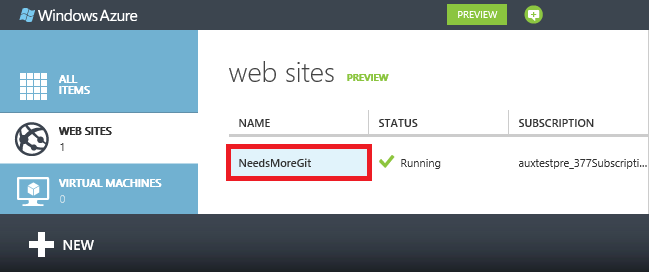
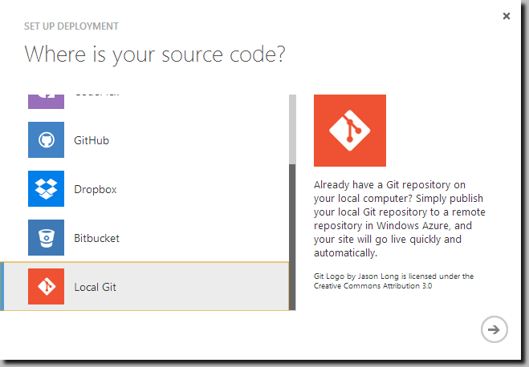
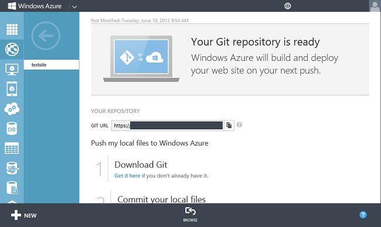
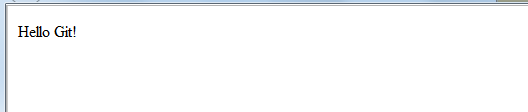
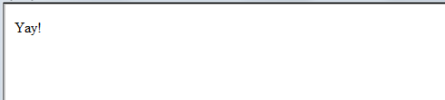

Publishing from Source Control to Windows Azure Web Sites
Windows Azure Web Sites supports continuous deployment from source code control and repository tools like BitBucket, CodePlex, Dropbox, Git, GitHub, Mercurial, and TFS. You can use these tools to maintain the content and code for your web site, and then quickly and easily push changes to your site when you want.
In this article, you will learn how to use Git to publish directly from your local computer to a Windows Azure Web Site (in Windows Azure, this method of publishing is called Local Git). You will also learn how to enable continuous deployment from repository web sites like BitBucket, CodePlex, DropBox, GitHub, or Mercurial. For information about using TFS for continuous deployment, see Continuous delivery to Windows Azure by using Team Foundation Service.
The task includes the following steps:
Installing Git
The steps required to install Git vary between operating systems. See Installing Git for operating system specific distributions and installation guidance.
Note
On some operating systems, both a command-line and GUI version of Git will are available. The instructions provided in this article use the command-line version.
Create a local repository
Perform the following tasks to create a new Git repository.
-
Open a command-line, such as GitBash (Windows) or Bash (Unix Shell). On OS X systems you can access the command-line through the Terminal application.
-
From the command line, change to the directory in which you will create your web site. For example, cd needsmoregit.
-
Use the following command to initialize a new Git repository:
git init
This should return a message such as Initialized empty Git repository in [path].
Add a web page
Windows Azure Web Sites support applications created in a variety of programming languages. For this example, you will use a static .html file. For information on publishing web sites in other programming languages to Windows Azure, see the Windows Azure Developer Center.
-
Using a text editor, create a new file named index.html in the root of the Git repository. Add 'Hello Git!' as the contents, and then save the file.
-
From the command-line, make sure you are in the directory that you created the repository in and use the following command to add the index.html file to the repository:
git add index.html
-
Next, commit the changes to the repository by using the following command:
git commit -m "Adding index.html to the repository"
You should see output similar to the following:
[master (root-commit) 369a79c] Adding index.html to the repository
1 file changed, 1 insertion(+)
create mode 100644 index.html
Enable the web site repository
Perform the following steps to enable a Git repository for your web site by using the Windows Azure portal:
-
Login to the Windows Azure portal.
-
On the left of the page, select Web Sites, and then select the web site for which you want to enable a repository.

-
In the quick glance section, select Set up deployment from source control. A Set Up Deployment dialog appears that asks Where is your source code?.

-
Choose Local Git, and then click the Next arrow.
-
After a short delay, you should be presented with a message that your depository is ready.

Deploy your project
Pushing local files to Windows Azure (Local Git)
Since you have already initialized a local repository and added files to it, skip steps 1 and 2 of the instructions displayed in the portal. Using the command-line, change directories to your web site directory and use the commands listed in step 3 of the instructions returned by the portal. For example:
git remote add azure http://username@needsmoregit.windowsazure.net/NeedsMoreGit.git
The remote command adds a named reference to a remote repository, in this case it creates a reference named 'azure' for your Windows Azure web site repository.
Publish and re-publish the web site
-
Use the following from the command-line to push the current repository contents from the local repository to the 'azure' remote:
git push azure master
You will be prompted for the password you created earlier when setting up your repository. Enter the password (note that Gitbash does not echo asterisks to the console as you type your password) and you should see output similar to the following:
Counting objects: 6, done.
Compressing objects: 100% (2/2), done.
Writing objects: 100% (6/6), 486 bytes, done.
Total 6 (delta 0), reused 0 (delta 0)
remote: New deployment received.
remote: Updating branch 'master'.
remote: Preparing deployment for commit id '369a79c929'.
remote: Preparing files for deployment.
remote: Deployment successful.
To http://username@needsmoregit.windowsauzre.net/NeedsMoreGit.git
* [new branch] master -> master
Note
The repository created for your Windows Azure web site expects push requests to target the master branch of its repository, which will then be used as the content of the web site.
-
In the portal, click the BROWSE link at the bottom of the portal to verify that the index.html has been deployed. A page containing 'Hello Git!' will appear.

-
Using a text editor, change the index.html file so that it contains 'Yay!', and then save the file.
-
Use the following commands from the command-line to add and commit the changes, and then push the changes to the remote repository:
git add index.html
git commit -m "Celebration"
git push azure master
Once the push command has completed, refresh the browser (you may have to press Ctrl+F5 for the browser to properly refresh) and note that the content of the page now reflects the latest commit change.

Deploy files from a repository web site like BitBucket, CodePlex, Dropbox, GitHub, or Mercurial
Pushing local files to Windows Azure by using Local Git allows you to manually push updates from a local project to your Windows Azure Web Site, while deploying from BitBucket, CodePlex, Dropbox, GitHub, or Mercurial results in a continuous deployment process where Windows Azure will pull in the most recent updates from your project.
While both methods result in your project being deployed to a Windows Azure Web Site, continuous deployment is useful when you have multiple people working on a project and want to ensure that the latest version is always published regardless of who made the most recent update. Continuous deployment is also useful if you are using one of the above mentioned tools as the central repository for your application.
Deploying files from either GitHub, CodePlex, or BitBucket requires that you have published your local project to one of these services. For more information on publishing your project to these services, see Create a Repo (GitHub), Using Git with CodePlex, Create a Repo (BitBucket), Using Dropbox to Share Git Repositories, or Quick Start - Mercurial.
-
After your web site project has been pushed to a repository web site, in the Windows Azure Portal quick glance section, select Set up deployment from source control. The Set Up Deployment dialog appears that asks Where is your source code?.
-
Choose the source control method that you are using.
-
When prompted, enter your credentials for the service you selected.
-
After you have authorized Windows Azure to access your account, you will be prompted with a list of repositories.

-
Select the repository that you want to associate with your Windows Azure web site. Click the checkmark to continue.
Note
When enabling continuous deployment with GitHub or BitBucket, both public and private projects will be displayed.
-
Windows Azure will create an association with the selected repository, and will pull in the files from the master branch. After this process completes, the deployment history on the Deployments page will show an Active Deployment message like the following:

-
At this point your project has been deployed from your repository of choice to your Windows Azure web site. To verify that the site is active, click the Browse link at the bottom of the portal. The browser should navigate to the web site.
-
To verify that continuous deployment is occurring, make a change to your project and then push the update to the repository you have associated with this web site. Your web site should update to reflect the changes shortly after the push to the repository completes. You can verify that it has pulled in the update on the Deployments page of your Web Site.

How continuous deployment works
Continuous deployment works by providing the DEPLOYMENT TRIGGER URL found in the deployments section of your site's Configure tab.

When updates are made to your repository, a POST request is sent to this URL, which notifies your Windows Azure Web Site that the repository has been updated. At this point it retrieves the update and deploys it to your web site.
Specifying the branch to use
When you enable continuous deployment, it will default to the master branch of the repository. If you want to use a different branch, perform the following steps:
-
In the portal, select your web site and then select CONFIGURE.
-
In the deployments section of the page, enter the branch you wish to use in the BRANCH TO DEPLOY field, and then hit enter. Finally, click SAVE.
Windows Azure should immediately begin updating based on changes to the new branch.
Disabling continuous deployment
Continuous deployment can be disabled from the Windows Azure Dashboard. Under the quick glance section, choose the option to disconnect from the repository that you are using:

After answering Yes to the confirmation message, you can return to quick glance and click Set up deployment from source control if you would like to set up publishing from another source.
Troubleshooting
The following are errors or problems commonly encountered when using Git to publish to a Windows Azure web site:
Symptom: Couldn't resolve host 'hostname'
Cause: This error can occur if the address information entered when creating the 'azure' remote was incorrect.
Resolution: Use the git remote -v command to list all remotes, along with the associated URL. Verify that the URL for the 'azure' remote is correct. If needed, remove and recreate this remote using the correct URL.
Symptom: No refs in common and none specified; doing nothing. Perhaps you should specify a branch such as 'master'.
Cause: This error can occur if you do not specify a branch when performing a git push operation, and have not set the push.default value used by Git.
Resolution: Perform the push operation again, specifying the master branch. For example:
git push azure master
Symptom: src refspec [branchname] does not match any.
Cause: This error can occur if you attempt to push to a branch other than master on the 'azure' remote.
Resolution: Perform the push operation again, specifying the master branch. For example:
git push azure master
Symptom: Error - Changes commited to remote repository but your web site not updated.
Cause: This error can occur if you are deploying a Node.js application containing a package.json file that specifies additional required modules.
Resolution: Additional messages containing 'npm ERR!' should be logged prior to this error, and can provide additional context on the failure. The following are known causes of this error and the corresponding 'npm ERR!' message:
Additional Resources